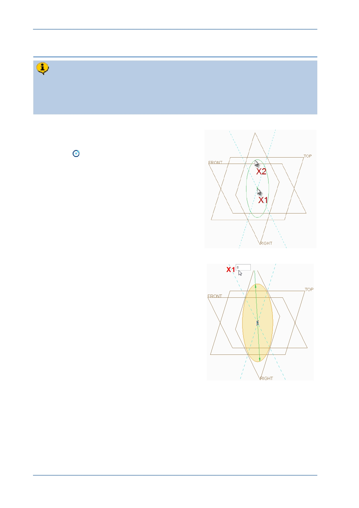

PTC Academic Program
Step 3: Create a sketch to define the peg diameter
An 8 mm diameter circle will be sketched on datum plane RIGHT. The center of
the circle will be located at the intersection of the horizontal and vertical sketch
references. This sketch will be created in the 3D view, without reorienting to the
2D sketch view.
1. Sketching a circle:
In the Sketch tab, click Center and Point
circle
.
Move the cursor over the intersection of the
two reference lines X1 , when the cursor
snaps to the intersection, click to place the
center of the circle.
Move the cursor away from the center and
click X2 to complete the circle.
Middle-click in the graphics area to deselect
the circle tool.
2. Changing the circle diameter:
Double-click the diameter dimension value at
X1 , then type 8 and press ENTER .
© 2012 PTC
Creo Parametric 2.0 Primer
Page 48